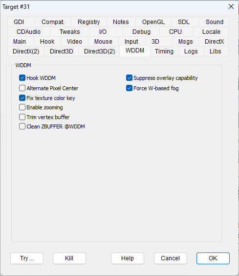

WDDM stands for "Windows Display Driver Model" (see Windows Display Driver Model at Wikipedia ).
WDDM offers a programmatic interface to customize the behavior of video drivers, though it is available only from Microsoft Vista and therefore it's not supported on Windows XP.
Most of these features are provided thanks to the support and code sharing of Narzoul's DDrawCompat wrapper ( see DDrawCompat ). For additional features it is also possible to use DDrawCompat both alone or integrated with DxWnd. DxWnd with DDrawCompat can work depending on the respective configuration, though in my opinion they have a good compatibility.
|
Hook WDDM |
HOOKVIDEOADAPTER |
Enables WDDM callbacks hooking. |
|
Alternate Pixel Center |
ALTPIXELCENTER |
implements the alternate pixel center correction (by adding -0.5f offset to both x and y vertex coordinates). See Microsoft page Directly Mapping Texels to Pixels The flag depends on the video adapter hooking that must be enabled (see the "Hook video adapter" flag). The problem impacts heavily on small textures like those used as fonts. The flag fixes for instance "Beast Wars Transformers" texts. |
|
Fix texture color key |
FIXCOLORKEY |
A common bug of video drivers implementation is to enable the transparency color key feature when not required. This produces artifacts of various aspects but caused by texture areas made transparent when they shouldn't (see ). The flag analyzes the frame content and enables the transparent color key feature only when requested. |
|
Enable zooming |
ENABLEZOOMING |
Experimental flag. The flag activates d3dumddi callbacks that scale the X and Y values of vertices giving the effect of zooming. The flag is experimental because it doesn't work on all kind of 3D engines and in some cases corrupts the scene. |
|
Trim vertex buffer |
TRIMVERTEXBUFFER |
Experimental flag. The flag activates d3dumddi callbacks that verify that the vertices Z value is trimmed inside the range from 0.0 to 1.0. This fixes the disapparition of the sky textures that build a starred sky in "Thief II". |
|
Clean ZBUFFER @WDDM |
DEPTHBUFZCLEAN |
This flag cleans the depth buffer at each frame rendering by means of the pfnDepthFill callback. It provides a stronger and more generalized way to fix some ZBUFFER artifacts, provided that the WDDM interface is available, as a valid alternative to the other ZBUFFER-related flags (i.e. "Clean ZBUFFER @0.0 fix", "Clean ZBUFFER @1.0 fix", ...) that work at the application level in the D3D method wrappers. |
|
Suppress overlay capability |
WDDMNOOVERLAY |
The suppression of the overlay capability can be activated at the application level (see SUPPRESSOVERLAY flag in DirectX2 tab). When WDDM hook is enabled, the WDDMNOOVERLAY flag prevents the detection of the OVERLAY capability also at the WDDM GetCaps callback level. |
|
Force W-based fog |
FORCEWBASEDFOGWDDM |
The W-based fog can be activated at the application level (see FORCEWBASEDFOG flag in Direct3D tab). When WDDM hook is enabled, the FORCEWBASEDFOGWDDM flag works also at the WDDM updateWInfo callback level. |